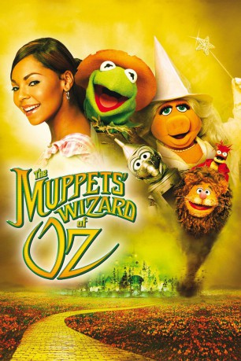

#776 Muppets: Der Zauberer von Oz
Alternativ: The Muppets' Wizard of Oz
 
 IMDB-Wertung: 5.3 / 10
IMDB-Wertung: 5.3 / 10  Metascore: 0
Metascore: 0 
Ein Tornado wirbelt die Sängerin Dorothy, die von einer Popstarkarriere träumt, und Toto (Pepe, die Krabbe) nach Oz. Dort trifft sie den berühmten Zauberer von Oz, der ihr verspricht, sie zum Superstar zu machen, wenn sie vorher die Bööe Hexe des Westens besiegt. Mit ihren eigenwilligen neuen Freunden, der Vogelscheuche (Kermit), dem Blechmann (Gonzo) und dem ängstlichen Löwen (Fozzi Bär), begibt Dorothy sich auf eine turbulente Reise, bis sie der Hexe höchstpersönlich gegenübersteht. Und die ist keine Geringere als - Miss Piggy!
Jahr: 2005
Dauer: 120 Minuten
FSK:
Land: USA Studio: ABCTonspuren:
Untertitel:
Auflösung: 720p (1230x712) Größe: 2201 MB
Genre: Abenteuer, Komödie, Familie, Fantasy, Musical
Regisseur: Kirk R. Thatcher
Drehbuch: Debra Frank, Steve L. Hayes, Tom Martin, Adam F. Goldberg, Debra Frank
Soundtrack: Michael Giacchino
Darsteller:
- Ashanti als Dorothy Gale
 Jeffrey Tambor als Wizard
Jeffrey Tambor als Wizard Quentin Tarantino als Quentin Tarantino - Kermit's Director
Quentin Tarantino als Quentin Tarantino - Kermit's Director David Alan Grier als Uncle Henry
David Alan Grier als Uncle Henry Queen Latifah als Aunt Em
Queen Latifah als Aunt Em Steve Whitmire als Kermit the Frog / Kermit the Frog as the Scarecrow / Beaker / Rizzo the Rat / Rizzo the Rat as the Mayor of Munchkinland / Statler as Kalidah Critic
Steve Whitmire als Kermit the Frog / Kermit the Frog as the Scarecrow / Beaker / Rizzo the Rat / Rizzo the Rat as the Mayor of Munchkinland / Statler as Kalidah Critic Dave Goelz als The Great Gonzo / The Great Gonzo as the Tin Thing / Dr. Bunsen Honeydew / Zoot / Waldorf as Kalidah Critic
Dave Goelz als The Great Gonzo / The Great Gonzo as the Tin Thing / Dr. Bunsen Honeydew / Zoot / Waldorf as Kalidah Critic Bill Barretta als Pepe the Prawn as Toto / Dr. Teeth / Johnny Fiama / Lew Zealand / Swedish Chef
Bill Barretta als Pepe the Prawn as Toto / Dr. Teeth / Johnny Fiama / Lew Zealand / Swedish Chef- Eric Jacobson als Miss Piggy / Fozzie Bear / Fozzie Bear as the Cowardly Lion / Miss Piggy as the Witches / Animal / Sam the Eagle
 Brian Henson als Sal Manilla
Brian Henson als Sal Manilla Kevin Clash als Clifford / Mulch
Kevin Clash als Clifford / Mulch Julianne Buescher als Muppet Performer
Julianne Buescher als Muppet Performer Allan Trautman als Crow / Old Tom
Allan Trautman als Crow / Old Tom Mike Quinn als Muppet Performer
Mike Quinn als Muppet Performer- Jeny Cassady als Muppet Performer
- Geoff Redknap als Muppet Performer
 Dan Payne als Weatherman
Dan Payne als Weatherman C. Ernst Harth als Earl
C. Ernst Harth als Earl Edward Hibbert als Stage Manager , uncredited
Edward Hibbert als Stage Manager , uncredited- Kelly Osbourne als Herself , uncredited
- Miss Piggy als Herself / Wicked Witch of the West / Good Witch of the North / Glinda the Good Witch of the South / Wicked Witch of the East , uncredited
- John Kennedy als Angel Marie / Floyd
- Rickey Boyd als Scooter / Crazy Harry
- Tyler Bunch als Janice / Old Tom
- John Henson als Sweetums
 Drew Massey als Clifford, assistant / Sal Manilla, assistant / Spotted Dick / Additional Muppets
Drew Massey als Clifford, assistant / Sal Manilla, assistant / Spotted Dick / Additional Muppets- Alice Dinnean als Camila / Foo-Foo
- Gord Robertson als Muppet Performer
- Adam Behr als Muppet Performer
- James Rowley als Muppet Performer
- Ken Jones als Earl's Buddy , uncredited
- Randy Thompson als Earl's Buddy , uncredited
Datei: X:\Kinder Collections\Muppets\Muppets Der Zauberer von Oz (2005, FSK, 1230x712).mkv seit 23.03.2015
Festplatte: Kinder-Filme+Trick
 Es gibt insgesamt 13 Filme in der Gruppe 'Kinder Collections\Muppets'
Es gibt insgesamt 13 Filme in der Gruppe 'Kinder Collections\Muppets'